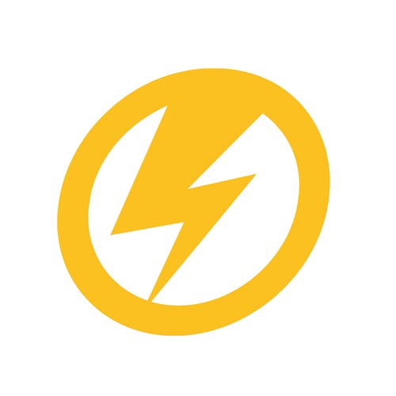
Luke Cage (Terre-616)
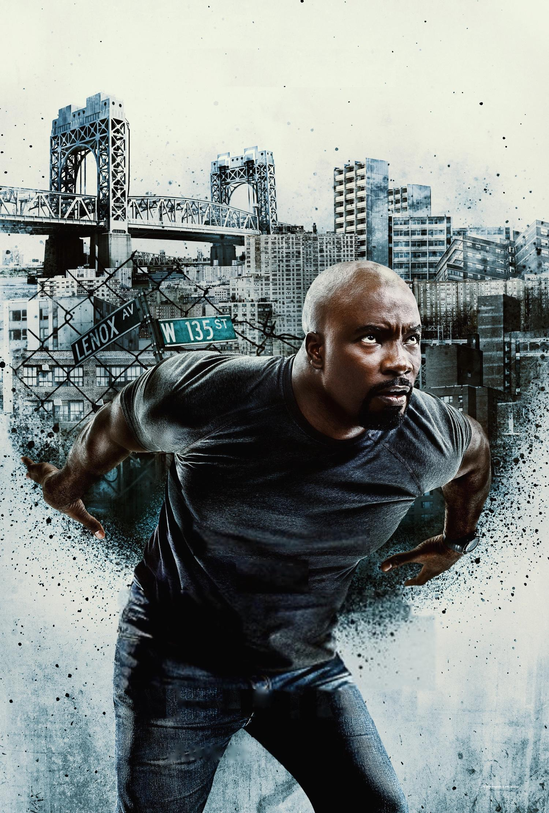
Origines :
Carl Lucas a grandi dans le ghetto de Harlem, à New-York, vivant de petits larcins.
A la suite d'une rivalité amoureuse, il est condamné à une peine de prison, après que la police ait découvert chez lui deux kilos d'héroïne cachés par son partenaire, Willis Strycker.
Peu après, son amie Reva est tuée lors d'un règlement de comptes, auquel échappe Willis.
Par la suite, Lucas tentera plusieurs fois de s'échapper de prison par la violence.
Un jour, il est transféré sur l'île de Seagate et devient la tête de turc de deux surveillants racistes.
L'un des deux sera limogé et l'autre, Rackham, jure de se venger.
Le Dr. Bernstein vient travailler dans la prison sur un agent biologique et voit en Lucas le sujet de test idéal.
Apprenant son histoire, il lui promet de l'aider à laver sa réputation s'il accepte de participer à une expérience.
Carl accepte mais, en l'absence de Bernstein, Rackham sabote l'expérience et Lucas en sort transformé.
Il parvient à s'échapper et se fait passer pour mort.
Il adopte alors le nom de Luke Cage et, inspiré par une récompense qu'il obtient après avoir résolu une affaire de cambriolage, il ouvre l'agence « Héros à Louer », où il se met à offrir ses services de combattant contre le crime en échange de modestes récompenses.
Afin de se faire une place parmi les nombreux justiciers à super-pouvoirs de New-York, il adopte le nom de Power Man et se retrouve opposé à des adversaires comme Gideon Mace, Chemistro ou encore Discus et Stiletto.
Cage intégrera une itération des Defenders et remplacera même la Chose pendant un temps au sein des Quatre Fantastiques.
Une nouvelle fois victime de chantage, Luke Cage rencontre Misty Knight, Colleen Wing et Iron Fist, avec qui il fraternise rapidement.
Le quatuor lance sa propre entreprise : les Héros à louer.
Ensemble, ils s'établissent une solide réputation, affrontant notamment le Constrictor et Dents-de-Sabre, des dealers, des mafieux ou encore des factions racistes.
Quand Daniel Rand (Iron Fist) est apparemment tué, Luke quitte New-York pour s'installer à Chicago.
Il abandonne son nom de super-héros, et travaille en collaboration avec Dakota North.
Il aidera le Punisher et se retrouve opposé à Willis Curtis et son fils, qui mourront dans le combat.
Cage travaillera plus tard en tant que garde du corps de l'avocat Matt Murdock et se met en ménage avec sa partenaire et compagne, Jessica Jones, avec qui il aura un enfant, Danielle.
Au même moment, contacté par Captain America qui appréciait le code d'honneur de Cage, il rejoint les New Avengers.
Il fera partie des héros présents lors de l'évasion de masse du Raft orchestré par Electro, où il blesse gravement l'Homme-pourpre, qui avait autrefois abusé de Jessica.
Lors de la Guerre civil, Luke Cage choisit de rejoindre le camp de Captain America, et entre en conflit avec l'équipe d'Iron Man.
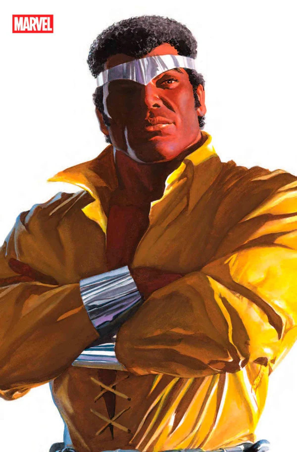
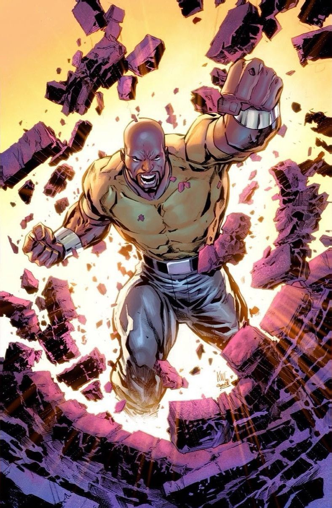
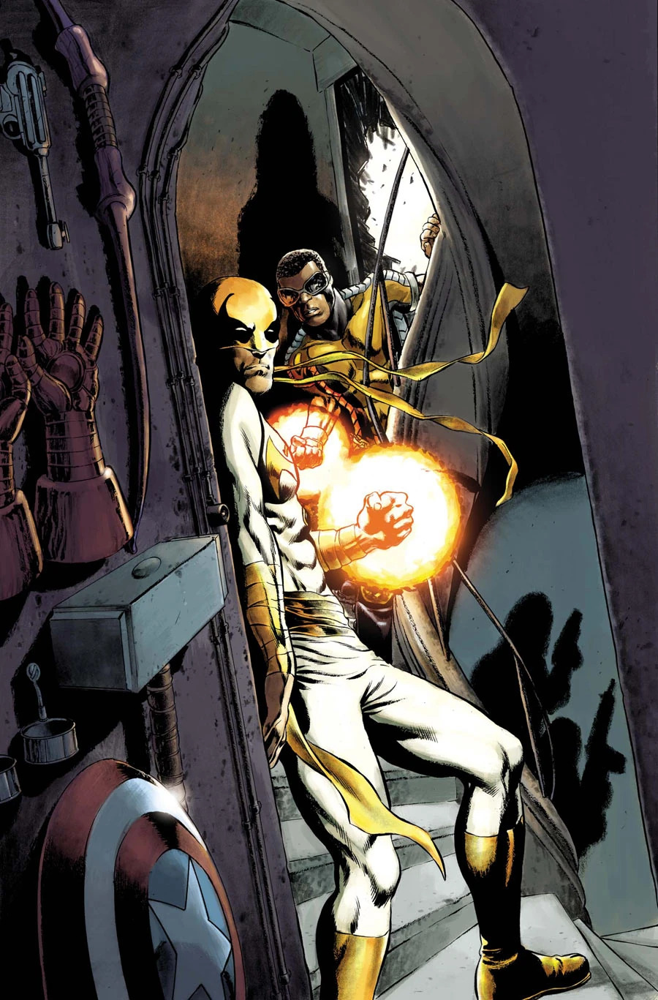
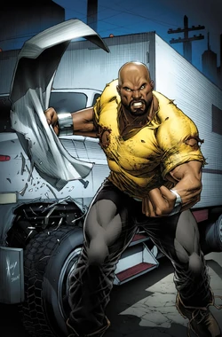
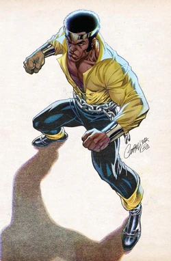
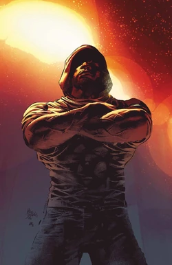
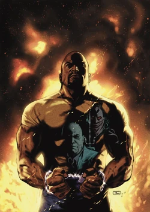
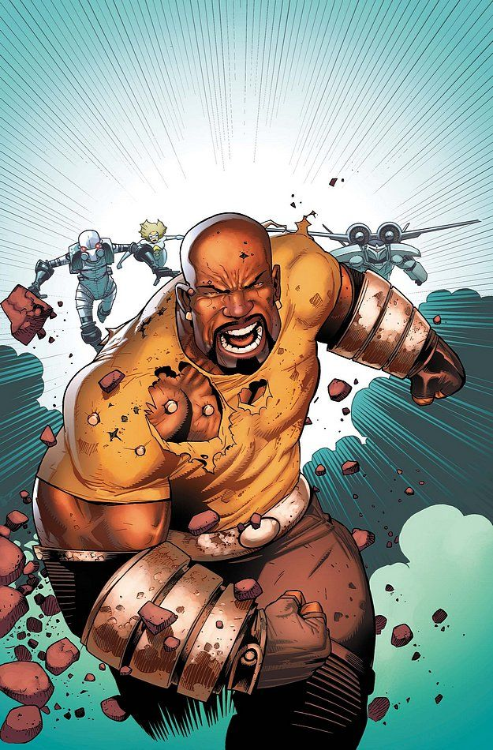
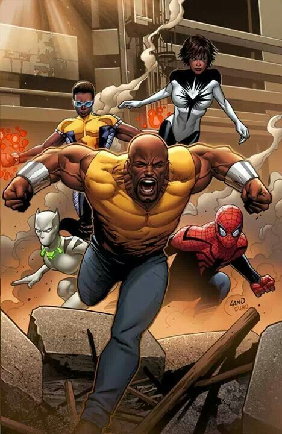
Personnalité :
Luke Cage est un homme résilient, ancien détenu injustement accusé, il a appris à ne jamais se laisser abattre.
Son sens du devoir et sa détermination en font un héros pas comme les autres, qui sait garder son calme et reste inflexible face aux pires situations.
Il se voit comme un protecteur des gens ordinaires. Il défend les plus faibles, refuse l'injustice et fait souvent passer la sécurité de sa communauté avant ses propres intérêts.
Il est aussi profondément loyal envers ses amis, notamment les Héros à louer.
Capacités :
Luke Cage possède une force et une endurance surhumaines, résultant des traitements expérimentaux qu'il a subi en prison.
Il est doté d'une peau plus dure que l'acier et de muscles extrêmement denses qui le rendent très résistant aux blessures physiques.

Costume :
A l'époque où il se faisait encore appeler « Power Man », il arborait un look old-school flamboyant, typique de l'époque : Une chemise jaune très ouverte, en tissu moulant à col large, un pantalon bleu accompagné d'une ceinture à gros maillons métalliques, des bracelets en métal et un diadème argenté autour de la tête.
Dans les versions plus récentes, il a abandonné ce costume voyant pour un style plus sobre.
Il porte le plus souvent des t-shirts ou sweats moulant, généralement jaunes ou gris, avec parfois un petit logo discret.
Il porte un jean ou un cargo, simple et fonctionnel.
Il porte également parfois une veste en cuir ou un blouson, et ne porte jamais de masque, assumant pleinement qui il est.
Les principaux ennemis de Luke Cage
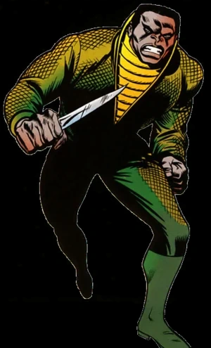
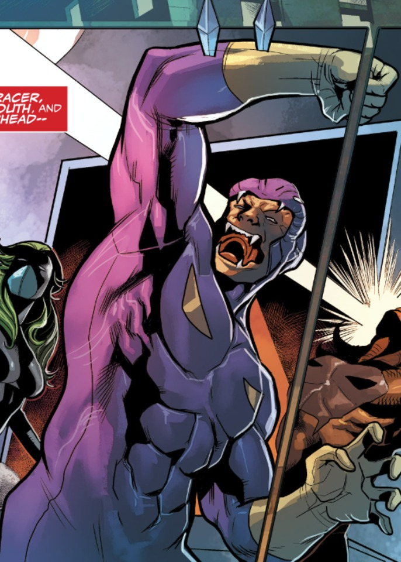
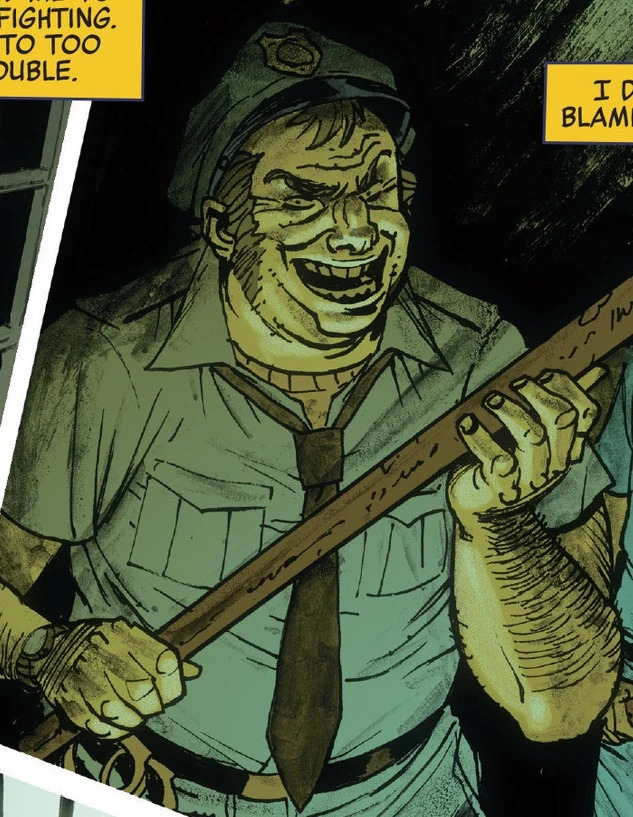
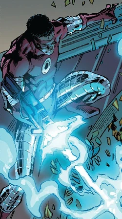
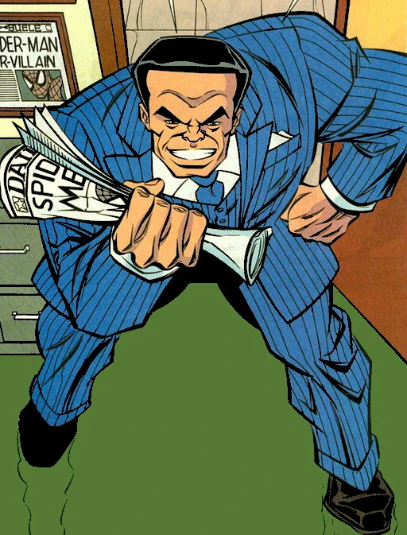


Équipes affiliées